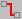

Connection.
The mouse pointer changes into a wire: wire mode is on.
Connection.
The mouse pointer changes into a wire: wire mode is on.Wires connect the components: from the + rail to a switch, from the switch to a gate, from the gate to a lamp and from the lamp to the − rail. Without wires a circuit does nothing.
Connection.
The mouse pointer changes into a wire: wire mode is on.A lamp only lights when the circuit is closed: there must be a path from the + rail to the − rail. See The power circuit; a step-by-step example is in Getting started.
Two wires may meet on the input of a gate, a counter or another block, for example from two switches. The input is then on as soon as one of the two switches is closed, just like two switches in parallel. Put the end of the second wire on the same green square as the first.
When you drag a component, its wires stay attached and move along. You can also lay a wire differently: drag the small block at an end to move that end, or drag the bend in the middle to shift it.
Point at a wire with the mouse: it becomes thicker and a hint shows what you can do.
 Delete selected object.
Only that wire disappears.
Delete selected object.
Only that wire disappears.Quicker: right-click the wire and choose Delete wire. The same menu also has Select wire. If the wire leads to an input that is on, that input turns off.
In the editing buttons, click

Remove connections: all wires disappear, including those to the rails and the source. The components stay.